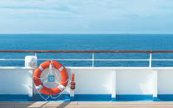

The deck floor covers the ship hull structure. There can be multiple decks or deck sections on a ship.
The deck at the top, which bears maximum exposure to weather, is the main deck or weather deck. Based on the position of a ship’s deck, decks are of six main types; main deck, poop deck, upper deck, lowers deck, weather deck and foredeck. The boat deck’s main function is holding the hull structure and providing the floor to work and standing and guard them against outside weather.
